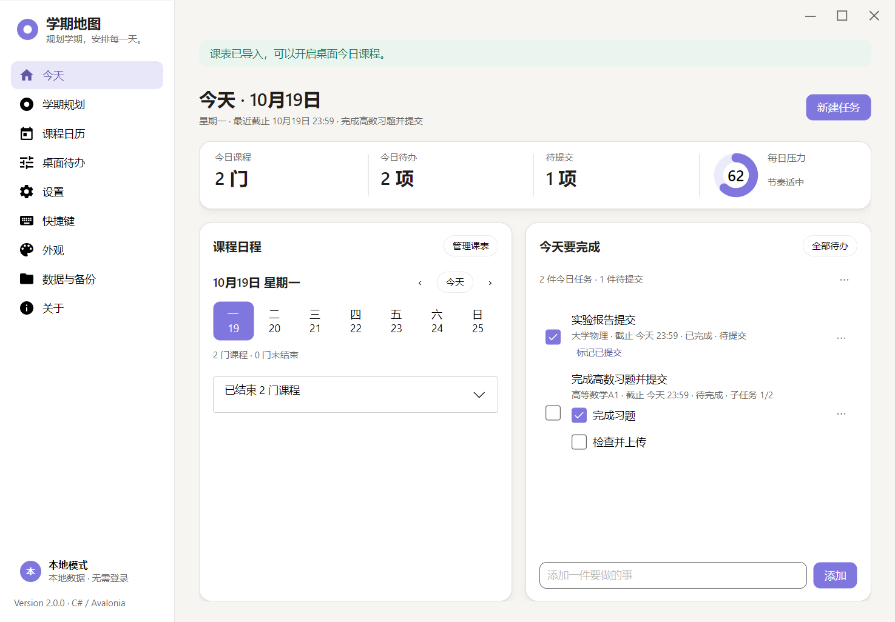
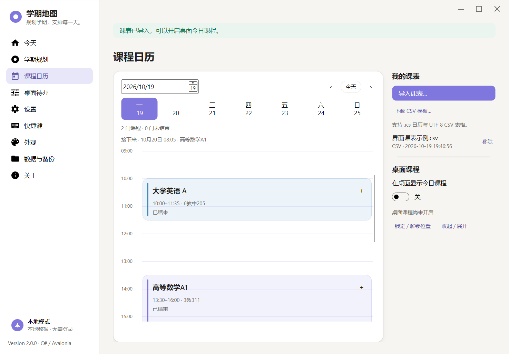

先看整个学期
管理学期与课程，导入任务 JSON，用压力热图看清任务集中的时间，再安排开工。
学期压力分布 示意
轻松 忙碌
课程、作业、截止日期，不必在脑海里反复排列。
从整个学期到今天要做的事，让压力看得见，让安排更从容。

真实软件界面 · 今天、课程与任务，一目了然
把散落的学习安排串起来，为每天留一点余地。
管理学期与课程，导入任务 JSON，用压力热图看清任务集中的时间，再安排开工。
课程与待办同屏查看。拆分子任务，记录预计耗时，把“做完”和“提交”分别记清楚。
综合课程时长、任务耗时与紧迫度，得到 0–100 的每日压力参考。每天的容量，由你自己设定。
看清负荷
给自己留些空间
关掉主窗口，今天的安排仍在桌面。待办、今日课程与压力圆环各自独立，想看什么，就留下什么。

导入 ICS 或 CSV 课表，把时间、教室和课程放回同一个日历。每周、单双周与调课安排，都有位置。
无需登录即可使用本地模式。数据支持 JSON 导出与历史备份；需要跨设备时，可配置云同步服务。
自定义每日容量、界面外观和桌面玻璃。支持中英文切换，也可以开启减少动画。
不需要。首次启动可以选择“暂不登录”，在本地管理课程与任务。账号和云同步是可选功能。
分数综合课程时长、预计任务耗时、任务类型、紧迫度与子任务进度，并参考你设置的每日容量。它用于规划学习负荷，不代表医学或心理健康评估。
目前支持 ICS 日历和 UTF-8 CSV 课表，导入前可以预览。目前不直接读取截图、PDF 或 XLSX 文件。
有待提醒任务时，关闭主窗口会保留到系统托盘，程序持续运行才能投递截止提醒。从托盘退出程序后，提醒停止。
不需要安装 Python 或 .NET。Windows x64 便携包包含运行时，解压后双击 PressureMap.exe。请保留整个文件夹，不要只移动 EXE。
选择你的设备，开始安排今天。